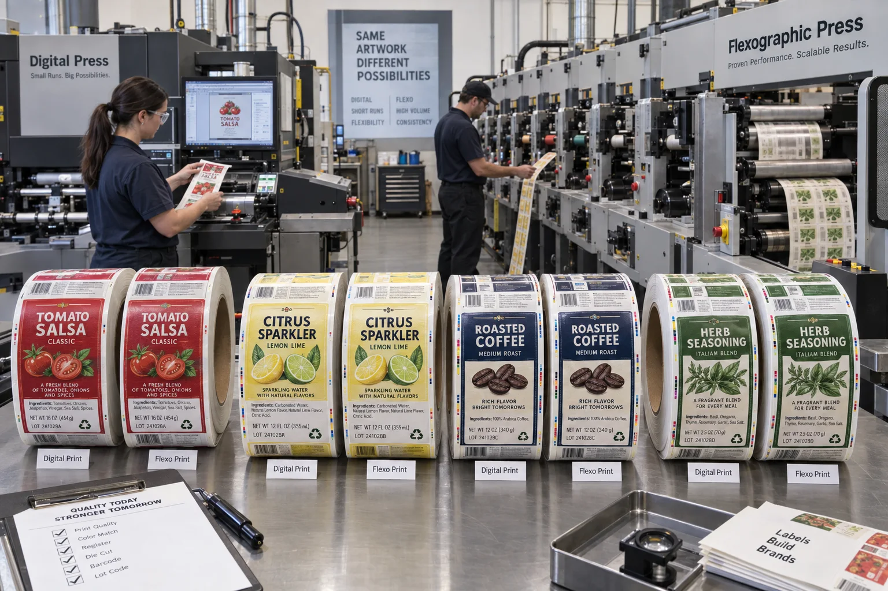

Short answer
Digital printing usually wins when quantities are smaller, artwork changes often or many SKUs share an order. Flexographic printing usually wins when one design repeats at stable volume and setup can be spread over a longer run. Both can produce retail-ready food and beverage labels. The right process is an economic and operational fit, not a quality ranking.
At our quote desk, buyers often ask for a unit price before telling us how many artworks are involved. That leaves out the detail that can change the whole answer. Ten thousand labels from one file are not the same production problem as ten thousand labels divided among twenty flavors.
Where digital and flexo differ in practice
| Decision factor | Digital printing | Flexographic printing |
|---|---|---|
| Prepress setup | No conventional printing plates; faster file-to-press changes | Plate and press setup are spread across the run |
| Many SKUs | Efficient version changes and short quantities per design | Every version adds planning and changeover |
| Stable high volume | Capable, but click or press economics may remain linear | Long runs can use the setup more efficiently |
| Variable content | Supports serialized or changing graphics in the right workflow | Best suited to repeated static artwork |
| Spot colors and coatings | Depends on press gamut and finishing configuration | Strong fit for dedicated inks, coatings and repeat programs |
HP describes digital label production as a way to reduce plates and support versioning, while conventional flexo remains strong for established volume. That broad distinction is useful, but a press brochure cannot calculate your job. A small label with four colors and one SKU may cross over differently from a large clear label using white ink and eight seasonal designs.
A composite inquiry: the biggest total order is not the longest run
This is a composite planning example, not a claimed customer order. A sauce brand requests 60,000 labels: 30,000 original, 10,000 mild, 8,000 hot, 5,000 garlic and seven test flavors at 1,000 each. The purchasing sheet calls it a 60,000-label job and assumes flexo must be cheaper.
I made that mistake early in label estimating too. I looked at the total quantity and ignored how many times the artwork stopped and restarted. Once plates, setup, color checks, leftover stock and the risk of a flavor revision were counted by SKU, digital became the more sensible launch method. Flexo could still win later for the original flavor after demand stabilized.
The lesson is not that digital is better. It is that aggregate volume can hide short runs. Ask for quantity per artwork, not only quantity per purchase order.
Color consistency needs a defined target
Both processes can print consistent color when files, profiles, materials and controls are managed. Problems start when “match the screen” is the only specification. A backlit RGB display, coated paper sample and clear BOPP label do not show color the same way.
- Identify critical brand colors and whether a measured target exists.
- State whether the label prints on white, clear, silver or textured stock.
- Approve a physical proof or production sample for sensitive colors.
- Keep the approved sample and color notes with future purchase orders.
Flexo can use dedicated spot inks when the job justifies them. Digital presses may reproduce the target through an expanded gamut or a press-specific ink set. Neither method should promise every Pantone color on every substrate without review. Read our Pantone vs CMYK guide before treating a color name as a production result.
Finishing can erase a simple press-price comparison
The printed image is only one stage. Lamination, varnish, die cutting, foil, slitting, inspection and roll packing can create the real bottleneck. A digital print job that requires an uncommon finishing path may not retain its apparent lead-time advantage. A flexo run with in-line coating and die cutting may move efficiently once setup is complete.
| Quote item | Question to ask | Why it matters |
|---|---|---|
| Printing setup | Are plates, color setup or minimum press charges included? | Explains the first-order cost |
| Tooling | Is the die reusable for later orders? | Separates one-time and repeat cost |
| Finishing | Is laminate, varnish, foil or white ink included? | Prevents unlike quotes from looking equal |
| Waste allowance | How is start-up and changeover waste handled? | Matters across many small SKUs |
| Repeat pricing | What changes after plates or tooling already exist? | Shows the longer-term economics |
Factory-side view
The cheapest label is sometimes the one you do not print yet
A long flexo run can deliver an attractive unit price, but only if the artwork and demand remain stable. If a new nutrition panel, distributor requirement or flavor correction turns half the inventory obsolete, the low unit price becomes expensive storage.
Digital printing often buys information during a launch. Flexo often rewards certainty after the market has supplied it.
When each method honestly wins
Digital is usually the better starting point for pilots, multiple flavors, regional versions, frequent changes and lower quantities per artwork. It also supports variable data when the press and workflow are designed for it.
Flexo is usually the better starting point for stable repeat work, larger quantities per artwork, dedicated spot colors and programs where established tooling and predictable schedules can be reused.
A hybrid purchasing strategy is often stronger than loyalty to one process. Launch digitally, measure which SKUs turn, then evaluate flexo for the proven volume. Keep small seasonal and regional versions digital if that preserves agility.
What to send for a useful comparison quote
- Finished label dimensions and dieline shape.
- Quantity for every artwork, not only the grand total.
- Material, adhesive, laminate or varnish requirements.
- Number of colors, white ink, spot colors and metallic details.
- Expected reorder frequency and likely artwork changes.
- Application method, roll direction, core and maximum roll diameter.
- One physical reference for any color or finish that is commercially critical.
For the artwork side, use the Label Artwork File Setup Guide. For a program with many versions, see Multi-SKU Short-Run Label Printing. An authoritative overview of current digital label capabilities is also available from HP Indigo.
Frequently asked questions
Is digital label printing always cheaper for short runs?
Digital often reduces plates and make-ready waste on short or multi-SKU work, but finishing, material, white ink, special colors and total quantity still affect the quote. Compare the complete finished label, not press cost alone.
When does flexographic label printing become more economical?
Flexo often gains an advantage when one artwork repeats at stable, higher volume and setup can be spread across many labels. There is no universal crossover quantity because size, colors, tooling, material and press configuration change the calculation.
Can digital printing match Pantone colors?
Digital presses can produce strong color consistency and may simulate many spot colors, but not every Pantone target is equally achievable. Critical brand colors should be identified early and approved on the intended material.
Can one order combine digital and flexographic production?
Yes. Some programs launch or test SKUs digitally, then move stable high-volume versions to flexo. Color standards, dielines and approved samples should be managed so the transition does not surprise the brand.
Related label guides
- Variable Data Labels: QR Codes, Lots and Serial Numbers
- Peel-and-Reseal Labels for Food Packaging
- Glass Bottle Labels That Survive Condensation
Review the complete label construction
Send the package photos, material, finished label size, quantity by artwork, storage conditions and application method. We can review fit, material and production details before preparing a quote and digital proof.